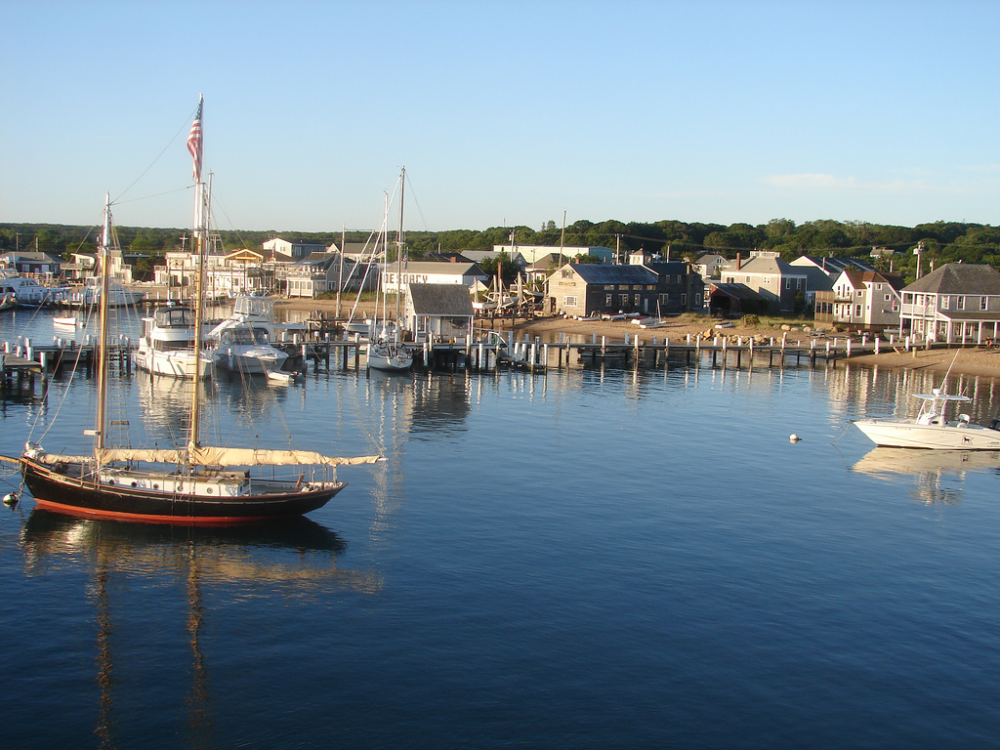
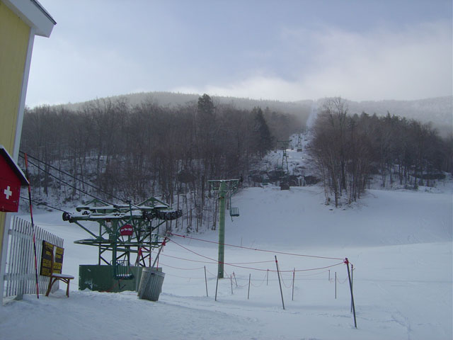

Restaurants
Look ahead to quieter service periods before committing to equipment or other purchases.
Plan what the busy months need to carry.
Look ahead to quieter service periods before committing to equipment or other purchases.
Plan for months when fewer jobs come in while recurring costs continue.
See how stock commitments and slower sales could affect the cash you need later.
What must the busy months carry?

Charter boats, guest houses and seafood shacks rely on summer to carry winter.
High: SummerLow: Winter

Ski shops, inns and sugarhouses rely on winter to carry the quieter mud season.
High: WinterLow: Mud season